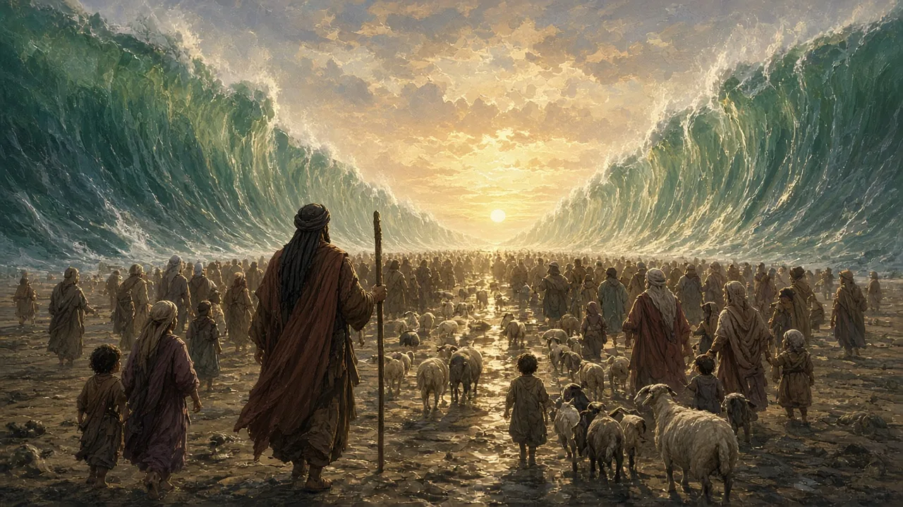
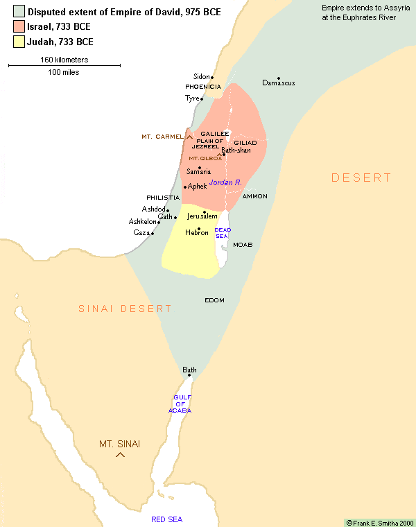
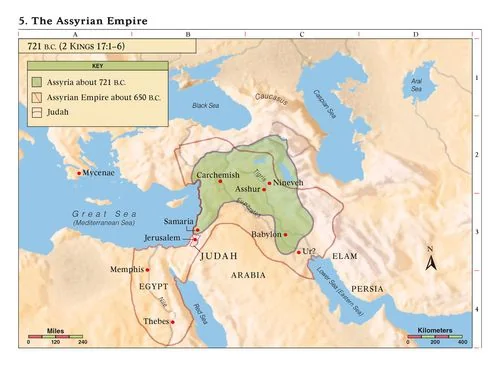

Lecture Roadmap
Three Historical Turning Points
IA People before a State
How do creation, ancestry, and covenant establish identity?
IILiberation, Kingdom & Exile
How do Exodus, Torah, monarchy, and catastrophe reshape the people?
IIITemple to Torah
How does Judaism survive conquest, diaspora, and the loss of the Temple?
Section I
Ancestral Memory & Covenant
How can a people possess an identity before possessing a state?
Names across Jewish History
Hebrews
A traditional name for the ancestors during the patriarchal and Exodus narratives.
Israelites
The people associated with Jacob/Israel, the tribes, judges, monarchy, and First Temple.
Jews
From Judah—Jacob’s son, his tribe, and later the southern kingdom—increasingly used after the Babylonian exile.
Judaism
The evolving religious and communal tradition of the Jewish people.
Names change as political and communal identities change.
History, Memory & Sacred Story
Sacred Narrative
Genesis and Exodus interpret origins through relationship with God.
Historical Evidence
Texts, archaeology, inscriptions, and comparative study answer different questions.
Collective Memory
A story can shape identity and practice even when its details remain historically debated.
Historical and religious questions overlap—but they are not identical.
Genesis 1–2
Creation: A World of Order & Responsibility
- One Creator: the cosmos is not a battlefield among competing deities
- Human dignity: humanity is created in the image of God
- Moral agency: human beings receive freedom, limits, and responsibility
- Sacred time: creation culminates in Sabbath rest
AI-generated illustration: light over the waters (Genesis 1)
Genesis 6–9
The Great Flood: Divine Judgment and Mercy
- Humanity’s corruption leads to the decision for a great flood
- Noah: Chosen for righteousness
- The flood as a reset of creation, sparing Noah and his family
- Promise of mercy: Covenant with Noah and the symbol of the rainbow
AI-generated illustration: the ark and the rainbow (Genesis 9)
Covenant People
- Jewish tradition traces its story to Abram (later Abraham)
- God chose Abram (and his descendants) to establish His covenant
- The covenant promise is spelled out in Genesis 17:7 (next slide)
Covenant (Hebrew berit)
Like a contract, it binds two parties with promises. Unlike a contract, it is an ongoing relationship of mutual loyalty between unequal partners—God and Israel—sealed by an oath or a sign.

Illustration: an artist’s imagining of Abraham
Genesis 17:7
The Covenant Promise
I will establish my covenant between me and you, and your offspring after you throughout their generations, for an everlasting covenant, to be God to you and to your offspring after you.
Genesis 17:7 (NRSV)
A relationship meant to last across generations—not a one-time deal.
Patriarchal Order
- Covenant passed down through the family line (patriarchal)—but often not to the firstborn
- Jacob’s twelve sons establish the twelve tribes of Israel
- Story of Joseph
Section II
Exodus, Monarchy & Exile
How does a liberation story become a nation—and survive political catastrophe?
The Exodus Narrative
- Enslavement: Pharaoh subjects the Israelites to forced labor in Egypt
- Calling: God commissions Moses to confront Pharaoh and lead the people out
- Deliverance: plagues and escape through the Sea of Reeds / Red Sea break imperial control
- Covenant: wilderness testing leads to Sinai, Torah, and a new communal identity

AI-generated illustration: crossing the sea (Exodus 14)
Why the Exodus Matters
Liberation
God is remembered as the one who hears the enslaved and defeats Pharaoh’s power.
Peoplehood
A collection of enslaved families becomes Israel, a covenant community.
Sinai & Torah
Freedom leads to obligation: liberated people receive a way of life.
Living Memory
Passover repeatedly places later generations inside the story of deliverance.
The Exodus turns memory of oppression into a covenantal ethic.
From Tribes to Monarchy & Temple
- Settlement: biblical tradition describes tribes in Canaan led by judges
- Monarchy: Saul, David, and Solomon centralize political authority
- Jerusalem: David establishes a capital linking dynasty, city, and worship
- First Temple: Solomon’s Temple becomes the central sanctuary

AI-generated imagining of Solomon’s Temple (not an archaeological reconstruction)
One Monarchy Becomes Two Kingdoms
- After Solomon: political unity fractures in the tenth century BCE
- Israel: the larger northern kingdom, with changing capitals and dynasties
- Judah: the southern kingdom centered on Jerusalem and the Davidic dynasty
- Prophets: men and some women (such as Huldah) who spoke for God—criticizing idolatry, injustice, and trust in foreign alliances

Map © Frank E. Smitha, 2000
Assyria Conquers the Northern Kingdom
- 722/721 BCE: Assyria captures Samaria and ends the kingdom of Israel
- Imperial policy: deportation and resettlement weaken organized resistance
- Lost Tribes: northern tribal identities fade, though not every inhabitant disappears
- Judah survives: the southern kingdom remains, often under imperial pressure

Map: The Assyrian Empire, about 721 and 650 B.C.
Babylonian Exile: Catastrophe Reinterpreted
- 586 BCE: Babylon captures Jerusalem and destroys the First Temple
- Exile: leaders and skilled groups are deported; many Judeans remain in the land
- Theological crisis: How can covenant survive the loss of king, land, and Temple?
- Prophetic answer: catastrophe becomes judgment, purification, and the possibility of return

AI-generated illustration: by the rivers of Babylon (Psalm 137)
Exile turns political defeat into a problem of interpretation—and a source of renewal.
Return & the Second Temple
- 539/538 BCE: Cyrus of Persia conquers Babylon and authorizes return
- 515 BCE: a rebuilt Temple restores sacrificial worship in Jerusalem
- Ezra and Nehemiah: Torah and covenant shape the restored community
- Permanent diaspora: many Jews remain in Babylonia and other centers
Section III
Conquest, Diaspora & Rabbinic Judaism
How can a Temple-centered tradition become portable?
Hellenism, Revolt & Hanukkah
- 332 BCE: Alexander’s conquest brings Judea into a Greek-speaking world
- Cultural exchange: many Jews adopt Greek language and customs while remaining Jewish
- Maccabean Revolt: Antiochus IV plunders the Temple (168 BCE), bans Sabbath, circumcision, and Torah, and sets up pagan worship there; the revolt begins in 167 BCE
- Hanukkah: remembers the Temple’s rededication and renewed Jewish worship
Roman Rule & Rising Tension
- 63 BCE: Pompey captures Jerusalem and subordinates Judea to Rome
- 37–4 BCE: Herod rules as a Roman client king and greatly expands the Temple
- 6 CE: Judea comes under direct Roman provincial administration
- 66 CE: taxation, governance, factional conflict, and resistance erupt into revolt
Revolt & the Destruction of the Temple
- 66 CE revolt begins · 70 CE Rome destroys Jerusalem and the Second Temple · 73/74 CE Masada falls
- A transformed center: sacrifice can no longer organize Jewish life
- 132–135 CE: the Bar Kokhba revolt is defeated with devastating losses
- Continuity in the land: displacement increases, but Jewish communities remain in Palestine

AI-generated illustration: Jerusalem burning, 70 CE
The end of the Temple system did not mean the end of Judaism.
Key concept
Understanding Diaspora
Diaspora: a population dispersed from an ancestral homeland that sustains a shared identity and connections across multiple communities.
Diaspora is not identical to exile: belonging abroad may coexist with memory, adaptation, and multiple homelands.
Understanding Diaspora
Four Features of a Diaspora
Ancestral Homeland
A real or remembered place of origin remains significant to collective identity.
Dispersion
People live in more than one host society through forced or voluntary movement.
Shared Identity
Memory, religion, language, institutions, family, or customs sustain group continuity.
Ongoing Connections
Communities maintain ties to the homeland and to one another across borders.
Diaspora: Dispersion without Disappearance
Before Rome
Large Jewish communities already lived in Babylonia, Alexandria, Antioch, and other cities.
After Revolt
War, enslavement, migration, and opportunity expand communities across the Mediterranean and beyond.
Many Centers
Jerusalem remains sacred while communal life develops in numerous homelands.
Shared Identity
Texts, worship, law, memory, family, and networks connect dispersed communities.
Diaspora becomes a durable form of Jewish civilization—not merely an interruption.
From Temple to Torah: Rabbinic Judaism
- Synagogue: local gathering, prayer, study, charity, and community become increasingly important.
- Rabbis: teachers linked to Pharisaic and scribal traditions gradually gain authority.
- Mishnah: around 200 CE, oral legal traditions are organized into a foundational text.
- Talmud: centuries of debate interpret the Mishnah and Torah for life without the Temple.
AI-generated illustration: sages debating Torah, c. 200 CE
Adaptation preserves continuity: Temple-centered worship becomes a portable way of life.
Antisemitism: A Historical Pattern
- Ancient hostility: political and cultural attacks on Jews existed before Christianity
- Christian empire: late Roman law increasingly restricted Jewish civic and religious life
- Scapegoating: minorities could be blamed for crises, disease, debt, or political instability
- Historical caution: Jewish occupations resulted from varied local conditions, including legal restrictions
Explain the institutions and myths that produce prejudice—never treat prejudice as inevitable.
Beyond the lecture
Modern Jewish Worlds
Optional Keep Learning
This lecture stops in late antiquity. The Rabbit Hole deck picks up the story: diaspora cultures, emancipation, modern movements, the Shoah, statehood, and the plurality of Jewish life today.
Modern & Contemporary Jewish Worlds →
Reading Guide Questions 4–5 (Reform Judaism, Zionism): answer from your textbook, pp. 233–234.